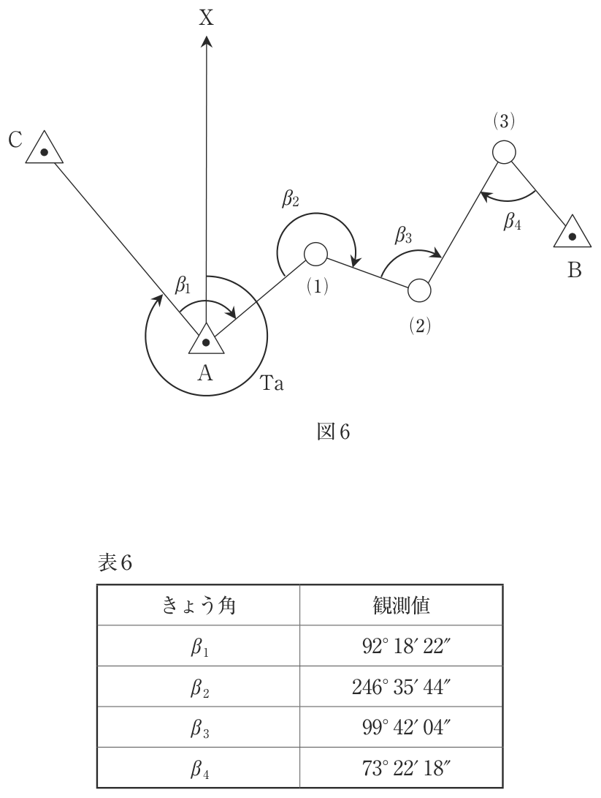
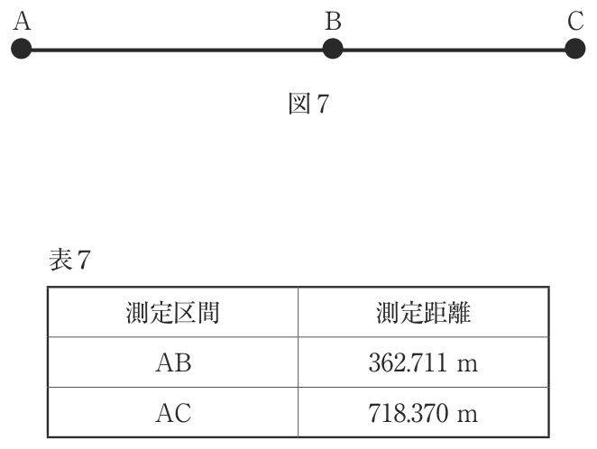
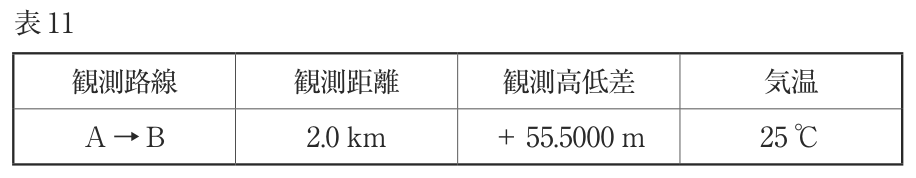
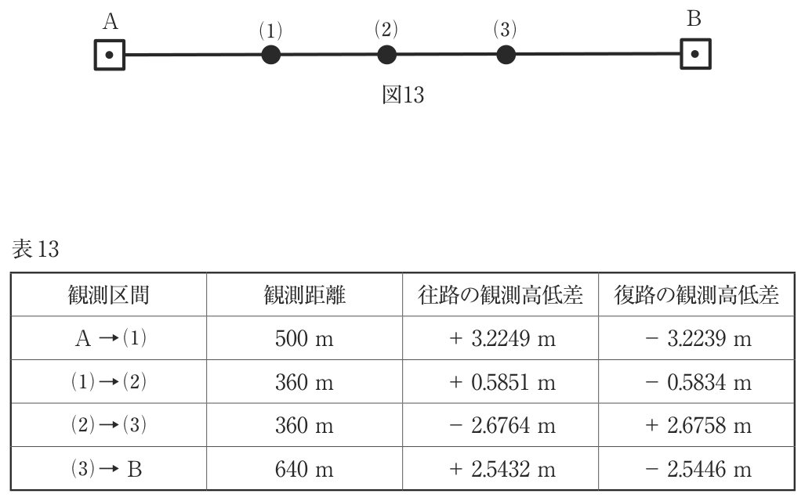
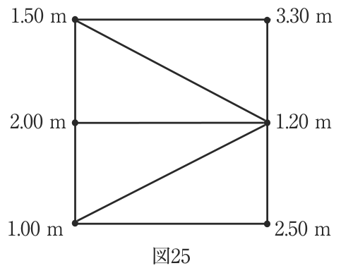
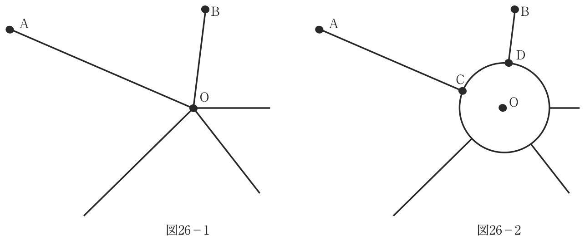
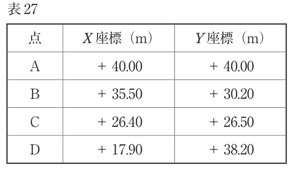

平成30年度（H30）計算問題
測量士補試験の計算問題 11 問。紙と鉛筆で解いてから「答えと解説」を開いてください。関数の値は試験の巻末の関数表を使います。
No.3数学
次のａ及びｂの各問の答えの組合せとして最も適当なものはどれか。次の中から選べ。
ただし，円周率π＝3.142とする。
なお，関数の値が必要な場合は，巻末の関数表を使用すること。
a．51°12′20″をラジアン単位に換算すると幾らか。
b．頂点Ａ，Ｂ，Ｃを順に直線で結んだ三角形ABCで辺AB＝6.0 m，辺AC＝3.0 m，∠BAC＝125°としたとき，辺BCの長さは幾らか。
- a=0.447ラジアン／b=8.1 m
- a=0.447ラジアン／b=8.6 m
- a=0.766ラジアン／b=8.6 m
- a=0.894ラジアン／b=8.1 m
- a=0.894ラジアン／b=8.6 m
答えと解説
答え 4
a 51°12′20″ をラジアンに まず分と秒を度に直します（60′ ＝ 1°、3,600″ ＝ 1°）。
51°12′20″ ≒ 51.2056°
180° が π ラジアンなので、度に π ÷ 180 を掛けます。
b 三角形の辺 BC 2 辺とその間の角が分かっていて、向かいの辺を出すときは、余弦定理（直角でない三角形にも使える、三平方の定理の仲間）を使います。
cos 125° は表に無いので、cos 125° ＝ −cos (180° − 125°) ＝ −cos 55° を使います。90° を超える角の cos はマイナスです。
＝ 36 ＋ 9 ＋ 36 × 0.57358
≒ 45 ＋ 20.65 ＝ 65.65
選択肢を 2 乗して比べます。
この問題の違和感を報告
No.6多角
図6に示すように多角測量を実施し，表6のとおり，きょう角の観測値を得た。新点⑶における既知点Bの方向角は幾らか。最も近いものを次の中から選べ。
ただし，既知点Aにおける既知点Cの方向角Taは320°16′40″とする。
なお，関数の値が必要な場合は，巻末の関数表を使用すること。

- 112°15′08″
- 139°39′32″
- 140°53′48″
- 145°30′32″
- 166°38′24″
答えと解説
答え 4
方向角は、X 軸（北）から右回りに測った向きの角です。A から順に、辺の方向角を 1 つずつ求めていきます。A では、C の方向（方向角 Ta）から右回りに β₁ なので、足すだけです。
360° を超えたので 360° を引いて 52°35′02″
(1) と (2) で測った角 β は、来た方向（1 つ前の点の方向）から右回りに、次の点の方向まで測った角です。来た方向の方向角は、前の辺の方向角 ＋ 180° です。
③ (2)→(3) 119°10′46″ ＋ 180° ＋ 99°42′04″ ＝ 398°52′50″ → 38°52′50″
(3) の β₄ だけは、図 6 の矢印の向きが逆です。B の方向から右回りに、来た方向 (2) まで測っています。
そこで、来た方向 (2) の方向角から β₄ を引きます。
④ (3)→B 218°52′50″ − 73°22′18″ ＝ 145°30′32″
この問題の違和感を報告
No.7多角
図7に示すように，平たんな土地に点Ａ，Ｂ，Ｃを一直線上に設けて，各点におけるトータルステーションの器械高及び反射鏡高を同一にしてAB，BC，AC間の距離を測定した。その結果から，器械定数と反射鏡定数の和を求め，定数補正後のAC間の距離718.400 mを得た。定数補正前のAB，AC間の測定距離は，表7のとおりである。この場合の定数補正前のBC間の測定距離は，幾らか。最も近いものを次の中から選べ。
ただし，測定距離は気象補正済みとする。また，測定誤差はないものとする。
なお，関数の値が必要な場合は，巻末の関数表を使用すること。

- 355.629 m
- 355.644 m
- 355.659 m
- 355.674 m
- 355.689 m
答えと解説
答え 1
器械（TS）と反射鏡には、それぞれ決まったずれ（器械定数と反射鏡定数）があり、距離を 1 回測るごとに同じ量だけずれます。2 つを合わせた補正量を K とすると、本当の距離は「測った値 ＋ K」です。
AC は補正前と補正後の両方が分かっているので、K はその差です。
K ＝ 718.400 − 718.370 ＝ 0.030 m
A・B・C は一直線なので、本当の距離では AB ＋ BC ＝ AC になります。
補正後の BC ＝ 718.400 − 362.741 ＝ 355.659 m
求めるのは補正前の BC なので、足した K を引いて戻します。
この問題の違和感を報告
No.11水準
1級水準測量及び2級水準測量では，温度の影響を考慮し使用する標尺に対して標尺補正を行う必要がある。公共測量により，水準点Ａ，Ｂの間で1級水準測量を実施し，表11に示す結果を得た。標尺補正を行った後の水準点Ａ，Ｂ間の観測高低差は幾らか。最も近いものを次の中から選べ。
ただし，観測に使用した標尺の標尺改正数は20 ℃において＋12 μm/m，膨張係数は＋1.2×10⁻⁶／℃とする。
なお，関数の値が必要な場合は，巻末の関数表を使用すること。

- ＋55.4980 m
- ＋55.4990 m
- ＋55.5003 m
- ＋55.5010 m
- ＋55.5037 m
答えと解説
答え 4
標尺（高さを読む物差し）の目盛りには、わずかな狂いがあります。標尺改正数は 1 m あたりの狂いを直す量（20 ℃ のとき）、膨張係数は温度 1 ℃ で 1 m あたりどれだけ伸びるかです。10⁻⁶ は 100 万分の 1 なので、1.2 × 10⁻⁶ は 1 m あたり 1.2 μm になります（1 μm ＝ 0.000001 m）。
1 m あたりの補正 ＝ ＋12 ＋ 1.2 × 5 ＝ 12 ＋ 6 ＝ ＋18 μm
高低差 55.5 m 分 ＝ 18 × 55.5 ＝ 999 μm ≒ 0.0010 m
補正後の高低差 ＝ 55.5000 ＋ 0.0010 ＝ ＋55.5010 m
標尺で読んだのは高さなので、掛けるのは高低差の 55.5 m。距離の 2.0 km は使いません。
この問題の違和感を報告
No.13水準
図13は，水準点Ａから固定点⑴，⑵及び⑶を経由する水準点Ｂまでの路線を示したものである。この路線で水準測量を行い，表13に示す観測結果を得た。再測が必要な観測区間はどれか。次の中から選べ。
ただし，往復観測値の較差の許容範囲は，Sを観測距離（片道，km単位）としたとき，2.5 mm√Sとする。
なお，関数の値が必要な場合は，巻末の関数表を使用すること。

- Ａ～⑴
- ⑴～⑵
- ⑵～⑶
- ⑶～Ｂ
- 再測の必要はない
答えと解説
答え 2
較差は、行き（往路）と帰り（復路）で測った高低差の食いちがいです。帰りは符号が逆になるので、往路と復路を足したものが較差になります。
(1)～(2) 0.5851 − 0.5834 ＝ 0.0017 m ＝ 1.7 mm
(2)～(3) −2.6764 ＋ 2.6758 ＝ −0.0006 m 大きさは 0.6 mm
(3)～B 2.5432 − 2.5446 ＝ −0.0014 m 大きさは 1.4 mm
許容範囲 2.5 mm√S と比べます。S は km なので、500 m は 0.5、360 m は 0.36、640 m は 0.64 です。0.6² ＝ 0.36、0.8² ＝ 0.64 なので √ がきれいに外れます。
(1)～(2) 2.5 × √0.36 ＝ 2.5 × 0.6 ＝ 1.5 mm ＜ 1.7 mm → 超えている
(2)～(3) 2.5 × √0.36 ＝ 2.5 × 0.6 ＝ 1.5 mm ＞ 0.6 mm
(3)～B 2.5 × √0.64 ＝ 2.5 × 0.8 ＝ 2.0 mm ＞ 1.4 mm
許容範囲を超えた (1)～(2) を再測します。
この問題の違和感を報告
No.14地形
トータルステーション（以下「TS」という。）を用いた縮尺1/1,000の地形図作成において，標高70 mの基準点から，ある道路上の点Ａの観測を行ったところ，高低角25°，斜距離33 mの結果が得られた。その後，点ＡにTSを設置し，点Ａと同じ道路上にある点Ｂを観測したところ，標高73 m，水平距離190 mの結果が得られた。
このとき，点Ａと点Ｂを結ぶ道路とこれを横断する標高80 mの等高線との交点は，この地形図上で点Ｂから何cmの地点か。最も近いものを次の中から選べ。
ただし，点Ａと点Ｂを結ぶ道路は直線で傾斜は一定であるとする。
なお，関数の値が必要な場合は，巻末の関数表を使用すること。
- 4.9 cm
- 6.8 cm
- 9.3 cm
- 12.2 cm
- 15.8 cm
答えと解説
答え 4
まず A の標高。基準点から高低角 25°（上向き）に斜距離 33 m なので、上がった高さは 33 × sin 25°。
A の標高 ＝ 70 ＋ 13.95 ＝ 83.95 m
A と B を結ぶ道路は傾きが一定なので、水平距離は標高の差に比例します。B から 80 m の等高線までの標高差と、B から A までの標高差の比を使います。
＝ 190 × 7 ÷ 10.95 ≒ 121.5 m
縮尺 1/1,000 では、実際の 1 m が地図上の 1 mm なので、121.5 m は 121.5 mm ≒ 12.2 cm。
この問題の違和感を報告
No.17写真
画面距離10 cm，画面の大きさ26,000画素×15,000画素，撮像面での素子寸法4 μmのデジタル航空カメラを用いて鉛直空中写真を撮影した。撮影基準面での地上画素寸法を12 cmとした場合，海面からの撮影高度は幾らか。最も近いものを次の中から選べ。
ただし，撮影基準面の標高は300 mとする。
なお，関数の値が必要な場合は，巻末の関数表を使用すること。
- 2,400 m
- 2,700 m
- 3,000 m
- 3,300 m
- 3,600 m
答えと解説
答え 4
図の 2 つの三角形（レンズの上と下）は相似なので、「素子の大きさ ： 画面距離 ＝ 地上の大きさ ： 撮影基準面からカメラまでの高さ H」です。画面距離は、レンズから撮像面までの長さ。単位を m にそろえます。
H ＝ 0.1 × 0.12 ÷ 0.000004 ＝ 0.012 ÷ 0.000004 ＝ 3,000 m
撮影基準面は標高 300 m にあるので、海面からの高さは 300 m 高くなります。
この問題の違和感を報告
No.18写真
画面距離10 cm，画面の大きさ26,000画素×15,000画素，撮像面での素子寸法4 μmのデジタル航空カメラを用いて，海面からの撮影高度3,000 mで標高0 mの平たんな地域の鉛直空中写真を撮影した。撮影基準面の標高を0 m，撮影基線方向の隣接空中写真間の重複度を60 %とするとき，撮影基線長は幾らか。最も近いものを次の中から選べ。
ただし，画面短辺が撮影基線と平行とする。
なお，関数の値が必要な場合は，巻末の関数表を使用すること。
- 720 m
- 1,080 m
- 1,250 m
- 1,800 m
- 1,870 m
答えと解説
答え 1
撮影基線長は、1 枚目を撮ってから 2 枚目を撮るまでに飛行機が進む距離です。まず、写真 1 枚が進む向きに写す地面の幅を出します。
縮尺 「画面距離 ÷ 基準面からカメラまでの高さ」です。基準面の標高は 0 m なので、高さは 3,000 m。
1 枚の幅 画面の短辺（15,000 画素）が撮影基線と平行なので、進む向きは短辺です。
地面の幅 ＝ 0.06 × 30,000 ＝ 1,800 m
撮影基線長 となりの写真と 60% 重なるので、ずれるのは残りの 40% です。
この問題の違和感を報告
No.25応用
図25に示すような宅地造成予定地を，切土量と盛土量を等しくして平坦な土地に地ならしする場合，地ならし後における土地の地盤高は幾らか。最も近いものを次の中から選べ。
ただし，図25のように宅地造成予定地を面積の等しい四つの三角形に区分して，点高法により求めるものとする。また，図25に示す数値は，各点の地盤高である。
なお，関数の値が必要な場合は，巻末の関数表を使用すること。

- 1.63 m
- 1.73 m
- 1.84 m
- 1.92 m
- 2.03 m
答えと解説
答え 1
切土（削る土）と盛土（盛る土）の量が等しいので、地ならし後の高さは、でこぼこを全部ならした平均の高さです。点高法では、三角形 1 つの平均の高さを「3 つの頂点の高さの平均」とみて計算します。
② (1.50 ＋ 2.00 ＋ 1.20) ÷ 3 ＝ 4.70 ÷ 3
③ (2.00 ＋ 1.00 ＋ 1.20) ÷ 3 ＝ 4.20 ÷ 3
④ (1.00 ＋ 2.50 ＋ 1.20) ÷ 3 ＝ 4.70 ÷ 3
4 つの三角形は面積が等しいので、この 4 つをそのまま平均します。
同じ点の高さは、その点を使う三角形の数だけ足されます。図の赤い数を掛けてまとめても同じです。
2 回 (1.50 ＋ 2.00 ＋ 1.00) × 2 ＝ 9.00
4 回 1.20 × 4 ＝ 4.80
(5.80 ＋ 9.00 ＋ 4.80) ÷ 12 ＝ 19.60 ÷ 12 ≒ 1.63 m
この問題の違和感を報告
No.26応用
図26－1に示すように，点Ｏから五つの方向に直線道路が延びている。直線AOの距離は400 m, 点Aにおける点Oの方位角は120°であり，直線BOの距離は300 m, 点Ｂにおける点Ｏの方位角は190°である。点Oの交差点を図26－2に示すように環状交差点に変更することを計画している。環状の道路を点Ｏを中心とする半径R=20 mの円曲線とする場合，直線AC，最短部分の円曲線CD，直線BDを合わせた路線長は幾らか。最も近いものを次の中から選べ。
ただし，円周率π=3.142とする。
なお，関数の値が必要な場合は，巻末の関数表を使用すること。

- 584.4 m
- 677.5 m
- 684.4 m
- 686.2 m
- 724.4 m
答えと解説
答え 3
方位角は、北から右回りに測った向きの角です。円の弧 CD の長さを出すには、O で A の方向と B の方向がつくる角が要ります。分かっているのは A・B から O を見た方位角なので、180° 足し引きして、O から見た向きに直します。
O→B 190° − 180° ＝ 10°
間の角 300° から北（360°）まで 60°、さらに 10° で 60° ＋ 10° ＝ 70°
弧 CD は、半径 20 m の円の 70/360 です。直線 AC・BD は、円の半径の分だけ短くなります。
AC ＝ 400 − 20 ＝ 380 m BD ＝ 300 − 20 ＝ 280 m
路線長 ＝ 380 ＋ 24.4 ＋ 280 ＝ 684.4 m
この問題の違和感を報告
No.27応用
点Ａ，Ｂ，Ｃ，Ｄで囲まれた土地に杭を設置することとなった。各点の座標値は表27のとおりである。点Ｃの座標をX＝26.50 m，Y＝26.40 mと誤って杭を設置した場合，杭に囲まれた面積は正しい値に比べてどれだけの較差を生じるか。最も近いものを次の中から選べ。
なお，関数の値が必要な場合は，巻末の関数表を使用すること。

- 0.41 m²
- 0.48 m²
- 0.82 m²
- 0.96 m²
- 1.92 m²
答えと解説
答え 2
四角形 ABCD を B と D を結ぶ線で 2 つに分けると、C が動いて面積が変わるのは三角形 BCD だけです。そこで、三角形 BCD の面積を、正しい C と誤った C の 2 回計算して比べます。
B が原点（X ＝ 0、Y ＝ 0）になるように、全部の座標から B の座標を引きます。形は変わらないので、面積も変わりません。
誤った C X ＝ 26.50 − 35.50 ＝ −9.00 Y ＝ 26.40 − 30.20 ＝ −3.80
D X ＝ 17.90 − 35.50 ＝ −17.60 Y ＝ 38.20 − 30.20 ＝ 8.00
座標から面積を出す方法（座標法）では、「その点の X ×（次の点の Y − 前の点の Y）」を全部の点で足すと、面積の 2 倍になります。B は X ＝ 0 なので、C と D の分だけです。C の次は D、前は B。D の次は B、前は C です。
−17.60 × {0 − (−3.70)} ＝ −65.12 合計 −137.92
誤った C −9.00 × (8.00 − 0) ＝ −72.00
−17.60 × {0 − (−3.80)} ＝ −66.88 合計 −138.88
マイナスは点をたどる向きで付くだけなので、大きさで比べます。
面積の差 ＝ 0.96 ÷ 2 ＝ 0.48 m²